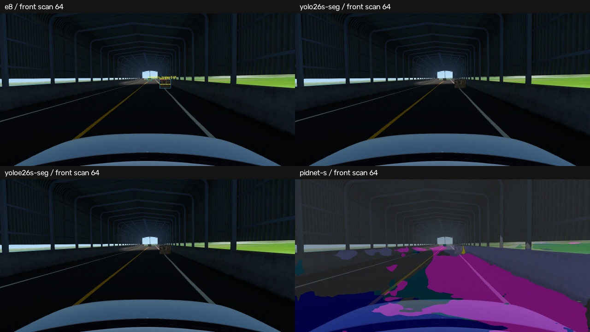
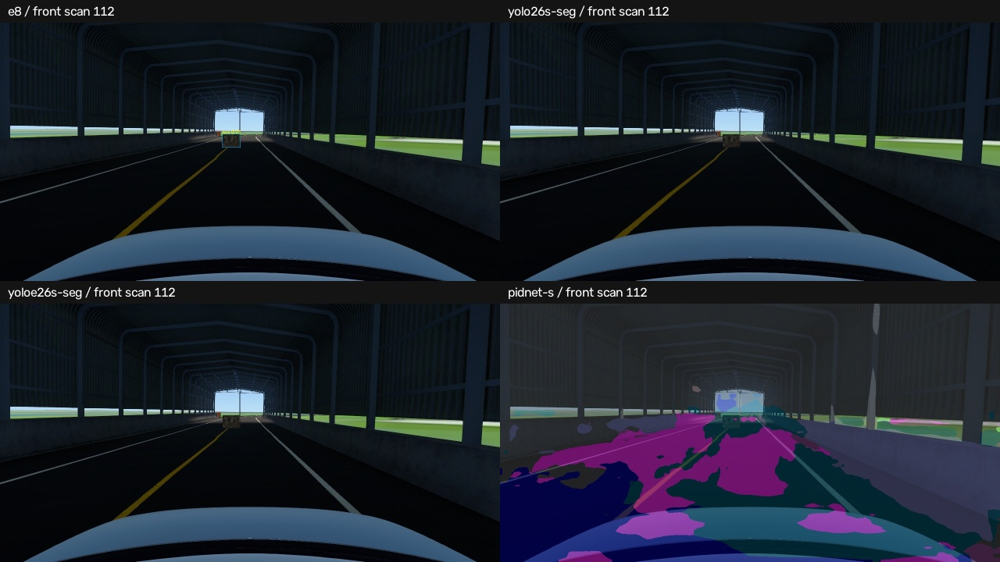

624 images per model = 208 scans × front/left/right. Offline diagnostic on one development bag; no independent GT and no control/full-stack acceptance. E8 and seg differ in precision, input size and training. PIDNet timing excludes input preprocessing. Red=box point support, yellow=tentative geometry support, green=instance mask. PIDNet overlay uses Cityscapes colors and has no ceiling class.
| Model | Images | Measured call p95 ms* | Front output labels @0.4 |
|---|---|---|---|
| e8 | 624 | 31.8 | {"box": 200, "concrete_barrier": 21, "plastic_barrier": 2, "traffic_drum": 3, "dog": 2} |
| yolo26s-seg | 624 | 64.4 | {"train": 1} |
| yoloe26s-seg | 624 | 66.9 | {"wooden crate": 67, "train": 1, "bench": 1} |
| pidnet-s | 624 | 33.6 | {} |
PCL normal + 4 plane evidence p95 38.5 ms/scan. No structure suppression.
Compare original objects and background, not just point count reduction. Scan 112: E8 detects the crate but has zero projected raw LiDAR support.

